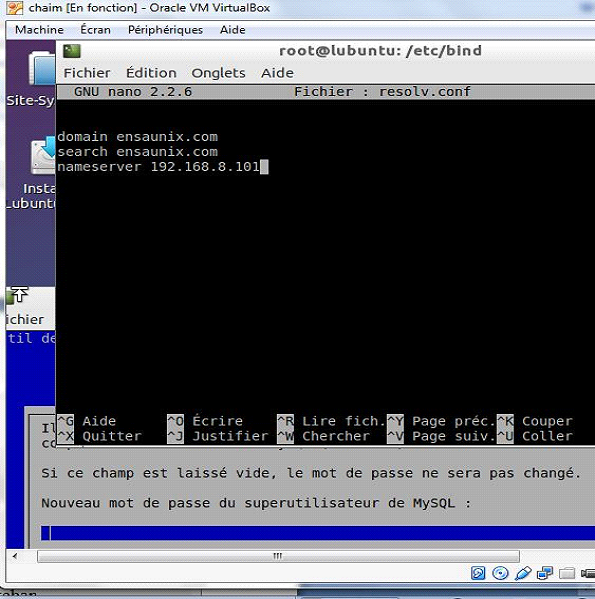

DNS
le Domain Name System (ou DNS, système de noms de domaine) est un service permettant de traduire un nom domaine en informations de plusieurs types qui y sont associées, notamment en adresse IP de la machine portant ce nom
Instalation :
Pour installer DNS on tape la commande : apt-get install bind9
Configuration
On change les paramètres réseau de la machine virtuelle (accés par pont) et on teste la connexion entre Windows et lubuntu avec ping
Avec la commande ifconfig on s’assure que l’adresse IP s’est changé en 192.168.8.101 ( de notre système window c’est 192.168.8.100)
On ouvre le fichier /etc/network/interfaces avec la commande : nano /etc/network/interfaces
Pour consulter les fichiers dans le répertoire /etc/bind : Cd /etc/bind;ls
On edite le fichier named.conf.options comme ci-dessous : nano named.conf.options
Comme 2éme étape ,on édite le fichier named.conf.local
On crée une zone pour ensaunix.com
On fait la même chose pour l’adresse inverse ‘’8.168.192.in-addr.arpa ‘’
nano named.conf.local
On copie et on crée simultanément le fichier db.ensaunix.com dans db.empty
On ouvre le fichier nano db.ensaunix.com et on l’édite comme suit :
On relance le service bind9 : Service bind9 reload
Pour vérifier que tout va bien on tape : Tail /var/log/syslog
On aura toujurs des problémes c’est pour cette raison on modifié les fichiers resolv.conf et dhclient.conf
nano resolv.conf

nano dhclient.conf
On verifie que DNS marche bien :

Copyright 2015